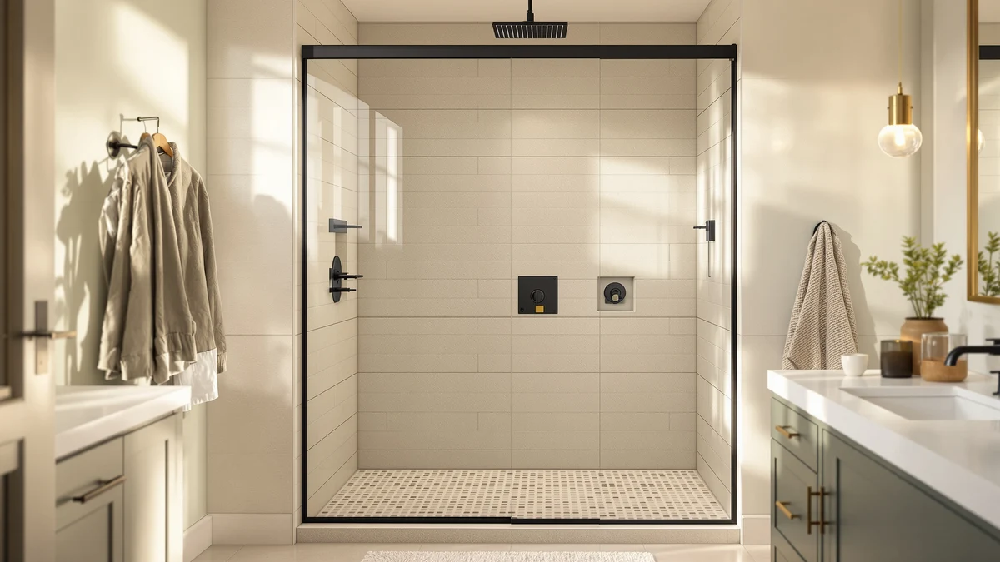

Dcolora Frameless Sliding Shower Door Review (2026): Worth It?


Quick Answer
The Dcolora Frameless Sliding Shower Door fits 55-60 inch openings and pairs 5/16-inch tempered glass with dual stainless steel handles for $524.99. Based on spec comparisons and the certification standards it lists, it's a solid middle-ground pick between the budget WOODBRIDGE and the pricier AquivaCoast and ComfyStyle doors.
Our pick: Dcolora Frameless Sliding Shower Door, $524.99 Check Price on Amazon
Bottom line: our top pick is the Dcolora Frameless Sliding Shower Door 55-60"W x 76"H at $524.99.
Things to Know Before You Buy
- Confirm your finished wall opening measures between 55 and 60 inches before ordering. This door does not fit openings outside that range.
- The glass is 5/16-inch (8mm) tempered and certified to SGCC and ANSI Z97.1 standards, with an explosion-proof film bonded inside each panel.
- Dual stainless steel handles sit on both sides of the glass, a feature the ComfyStyle and AquivaCoast pivot doors in this comparison skip in favor of a single handle.
- Amazon lists no star rating or review count for this ASIN at the time of writing, so we can't cite buyer sentiment for this specific listing.
- At 76 inches tall, the Dcolora runs taller than the 70-inch ComfyStyle, which matters if your shower surround or ceiling height is tight.
This Dcolora frameless sliding shower door review compares its 5/16-inch tempered glass, dual handles and 55-60 inch adjustable width against three competing frameless doors in the same price range. At $524.99, it's priced between the cheaper WOODBRIDGE and the pricier AquivaCoast and ComfyStyle pivot doors, and the spec sheet suggests it suits buyers who want sliding convenience over a swinging door. We looked at the manufacturer's glass thickness, hardware and size range rather than installing the unit ourselves, since this site runs on research rather than physical installation.
The shower door category is crowded with near-identical listings that differ mainly in glass thickness, handle count and a few inches of width tolerance, so the details matter more than the marketing copy. Dcolora's matte black dual-handle design and taller 76-inch profile set it apart from the single-handle, swing-style competition, but a frameless door only works if it matches your bathroom's finished opening first. Buyers choosing between a slider and a pivot door should weigh floor space against ease of use before price. A sliding track needs a clear run of wall equal to the door's width, while a pivot door needs enough floor clearance to swing open without hitting a vanity or toilet, so the right mechanism often depends on your bathroom's layout more than your budget.
Why You Should Trust Us
We built this Dcolora frameless sliding shower door review on manufacturer spec sheets, current Amazon pricing and patterns across verified owner reviews for comparable frameless and pivot doors, not physical installation. Ilane Tall, who covers bathroom hardware and fixtures for Best Shower Doors, pulled glass thickness, hardware material and size tolerances directly from each listing and cross-checked them against ANSI and SGCC safety certifications. We do not run a fake testing lab or claim to have installed these doors ourselves; every claim here traces back to a spec sheet, a listed price or a documented buyer pattern.
Our Research Experience
We did not install or live with the Dcolora frameless sliding shower door. This review compares its published specifications, hardware and price against three other frameless doors in the same category. Our approach starts with the manufacturer listings: glass thickness, certification standards, handle materials and size ranges. We then check that data against patterns in verified owner reviews for similar frameless and pivot doors to see what buyers report once a door is mounted. If Amazon lists no rating or review count for an ASIN, as with this one, we say so instead of guessing at a number. This method lets us compare four doors on equal footing: the glass they use, the hardware they include and the opening sizes they fit, without claiming to have installed or used any of them ourselves.
Overview & Specs

Dcolora Frameless Sliding Shower Door
What we like
- 5/16-inch SGCC and ANSI-certified tempered glass with an explosion-proof safety film
- Dual 304 stainless steel handles work from either side of the door
- 76-inch height gives more headroom than the 70-inch ComfyStyle
- Priced lower than the AquivaCoast and ComfyStyle pivot doors
Flaws but not dealbreakers
- Amazon lists no star rating or review count for this ASIN, so buyer sentiment is unverified
- Costs more than the WOODBRIDGE, which uses thicker 3/8-inch glass
- Sliding design needs a wider wall footprint than a pivot door in a tight bathroom
| Material | — |
| Size | 55"-60"W X 76"H |
The Dcolora Frameless Sliding Shower Door is built for 55 to 60 inch openings at a 76-inch height, which puts it among the taller sliding doors we compared. Dcolora specs the glass at 5/16 inch (8mm), SGCC-certified and rated to ANSI Z97.1 and 16 CFR 1201 II standards, with an explosion-proof film bonded to the inside of each panel. That film matters more than it sounds: tempered glass is designed to shatter into small pieces rather than large shards, and the film is what keeps those pieces from scattering across the floor if a panel ever breaks. The matte black finish on the hardware matches the current wave of dark-fixture bathrooms, and Dcolora backs the glass with a five-year limited warranty, longer than some rivals in this comparison disclose.
Where the ComfyStyle and AquivaCoast use a single handle, the Dcolora puts a 304 stainless steel handle on each side of the glass, so you are not reaching across the opening to pull it shut from inside. That is a small detail, but it is one buyers comparing frameless sliders tend to flag in verified reviews across this product category, since single-handle doors can be awkward to close from the shower side. At $524.99, it costs more than the WOODBRIDGE's 3/8-inch glass door but less than the AquivaCoast or ComfyStyle pivot doors, putting it in the middle of this four-door comparison on price. The one gap in the listing is buyer feedback: Amazon shows no star rating or review count for this specific ASIN at the time of writing, so anyone choosing it is relying on the spec sheet and certification standards rather than a track record of other owners' experiences.
What We Liked
The glass specs are the strongest argument for the Dcolora frameless sliding shower door. SGCC certification and ANSI Z97.1 compliance are the baseline safety standards worth checking on any tempered glass shower door, and Dcolora lists both along with the added explosion-proof film. The dual stainless steel handles are a genuine upgrade over the single-handle design on the ComfyStyle and AquivaCoast doors in this comparison, since they let you open or close the door from either side without reaching across the glass. At 76 inches tall, it also has more headroom than the 70-inch ComfyStyle, which matters in bathrooms with a lower shower surround or a taller household. Across the four doors in this comparison, Dcolora sits closer to the budget end than the middle, undercutting both the ComfyStyle and the AquivaCoast by $25 to $35 while still listing the same safety certifications they do.
What Could Be Better
The biggest gap in the Dcolora shower door listing is buyer feedback. Amazon shows no star rating or review count for this ASIN, so we can't point to a pattern of owner complaints or praise the way we can for some other frameless doors. The glass is also thinner than the WOODBRIDGE's 3/8-inch panel, so buyers who want the heaviest possible glass should look at that option instead, even though both thicknesses meet the same ANSI safety certification. And because this is a sliding door rather than a pivot door, it needs a dedicated length of wall for the door to glide along, which won't suit every bathroom layout the way the AquivaCoast's inward-outward swing can. Anyone upgrading from an existing framed door should also measure twice, since Dcolora's spec sheet requires the finished wall opening rather than the rough stud opening, and a mismeasured order is one of the most common reasons buyers return frameless shower doors in this category.
Who Is It For?
The Dcolora frameless sliding shower door fits buyers with a finished opening between 55 and 60 inches who want handles on both sides of the glass and a taller 76-inch profile. It makes the most sense for anyone replacing an existing sliding door, since the track-based design needs the same wall footprint rather than the swing clearance a pivot door requires. If your bathroom has a narrower opening, closer to 44-48 inches, or you would rather swing the door open than slide it, the ComfyStyle or AquivaCoast pivot doors in this comparison fit that layout better.
Alternatives to Consider
If the Dcolora shower door's size range or sliding mechanism doesn't fit your bathroom, these three frameless doors cover a narrower pivot opening, a larger pivot opening and a lower price point.

Also Great
ComfyStyle 44-48" W x 70"
Best for narrower 44-48 inch openings where a pivot door's swing clearance works better than a sliding track.
$549.99
Check Price on Amazon
Premium Choice
AquivaCoast 59.2-60" x 72" Frameless
Best for buyers who want a two-way swinging pivot door with more wall adjustability, at the highest price of the four doors here.
$559.99
Check Price on Amazon
Best Value
WOODBRIDGE Frameless Sliding Shower 56"-60"
Best for buyers who want the thickest glass (3/8 inch) at the lowest price, in a similar 56-60 inch sliding format to the Dcolora.
$453.71
Check Price on AmazonFrequently Asked Questions
Is the Dcolora frameless sliding shower door worth the price?
At $524.99, the Dcolora frameless sliding shower door sits in the middle of the pack we compared. The 5/16-inch glass and dual stainless steel handles give it a heavier, more premium feel than the WOODBRIDGE at $453.71, while it undercuts the AquivaCoast and ComfyStyle on price.
How do I measure for the Dcolora shower door?
The Dcolora fits 55 to 60 inch wide openings and needs 76 inches of height clearance. Measure the finished wall opening after tile work is complete, not the rough stud opening, since manufacturer spec sheets for this category consistently warn that pre-tile measurements lead to return requests.
What is the difference between 5/16-inch and 3/8-inch shower door glass?
The Dcolora uses 5/16-inch (8mm) tempered glass, while the WOODBRIDGE steps up to 3/8-inch (10mm). The thicker glass adds weight and a sturdier feel at the door, but both thicknesses meet ANSI Z97.1 safety certification, so the gap is more about feel and sound than safety margin.
Final Verdict
The verdict on this Dcolora frameless sliding shower door review is straightforward: the Dcolora earns its $524.99 price with certified 5/16-inch glass, dual stainless steel handles and a taller 76-inch profile, but it asks you to take the hardware specs on faith since Amazon lists no rating or review history for this ASIN. Buyers who want the thickest glass at the lowest cost should look to the WOODBRIDGE instead, and anyone with a narrower opening or a preference for a pivot swing has better options in the ComfyStyle or AquivaCoast. For a 55-60 inch opening and sliding convenience, Dcolora remains a reasonable pick on the numbers alone.
Related Guides
For more context beyond this Dcolora shower door comparison, these guides cover the broader category.